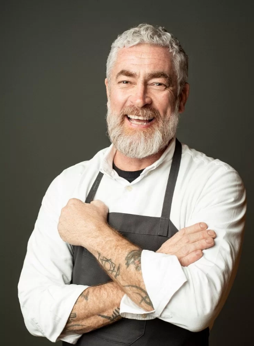

O The Good Chef foi fundado em 2023, com o objetivo de apresentar uma culinária diferente, algo nunca visto antes!
Nosso objetivo é: "Fazer você ter uma experiência incrível", tanto com nossos pratos, quanto com o nosso atendimento.
Possuimos uma equipe fantástica, com profissionais renomados e formados nas melhores acadêmias de gastronomia.
Os alimentos são preparados com todo o cuidado necessário, além de serem selecionados nas melhores fazendas, posssuindo nosso selo de qualidade e de comida orgânica, ou seja, que não utiliza agrotóxicos!
Presamos por nossos clientes, sendo o nosso lema e frase de inspiração "o cliente sempre tem razão".
Chef Alex Atala
Chef Helena Rizzo
